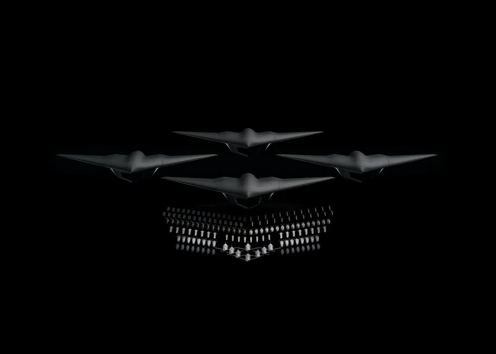
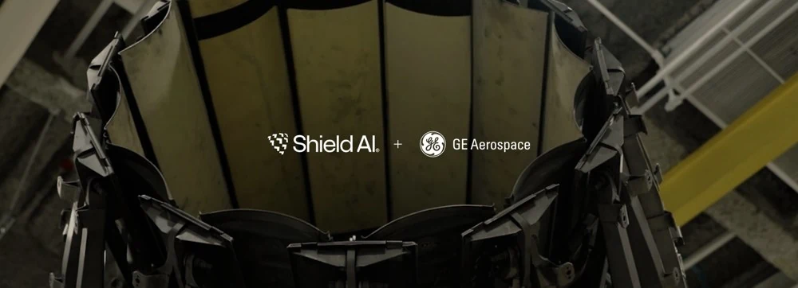

X-BATSr. Staff Mechanical Engineer
Wing-fold system & Hopper ECS integration
I own the conceptual design of the complete wing-fold system for the X-BAT production vehicle and the mechanical integration of the environmental cooling system (ECS) for the X-BAT Hopper prototype.
X-BAT is a VTOL aircraft designed to take off and land vertically without a runway. I only describe work here that can be discussed publicly.
More X-BAT photos & public program context +


